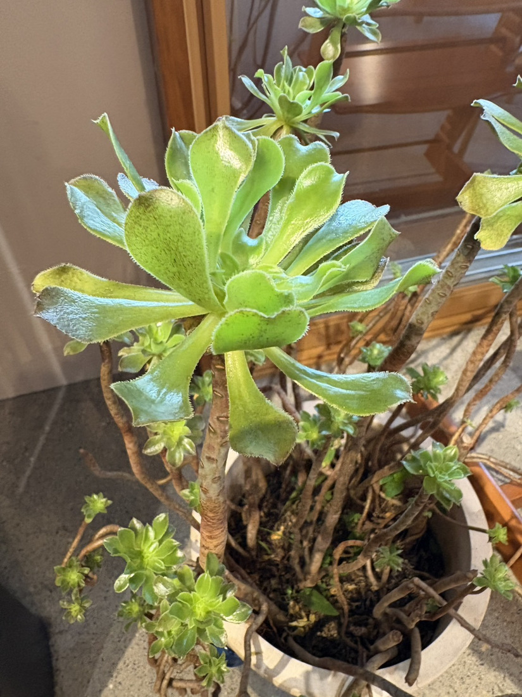
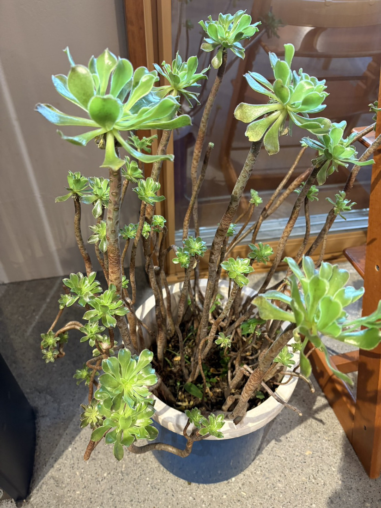
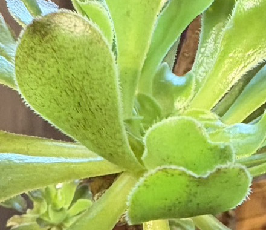

地図を読み込んでいるよ…
🔍 写真も地図も、押しているあいだ拡大して見られるよ（スマホは指を置いてすこし待ってね）。
🌍 の地図＝この子がもともと自生している場所を緑に。⚠属としての分布＝マカロネシア（カナリア諸島、カーボベルデ、マデイラ諸島など）、北アフリカ、東アフリカやアラビア半島の一部（みんなの趣味の園芸・ヤサシイエンゲイ）。⚠この株の種が決まっていないので、種としての原産地は分からない。くわしくは下の地図の説明を見てね。
⚠⚠この地図は、いつもより「だいたい」の度合いが強いよ＝理由が2つある。⭐ひとつめ＝この株は種が決まっていないので、これは「アエオニウム属ぜんたい」の分布だということ。⭐ふたつめ＝この属の中心は「島」なのに、地図は国までしか塗れないこと。⚠⚠だからスペインとポルトガルが緑になっているけれど、本土に自生しているわけではないよ＝スペインの緑はカナリア諸島、ポルトガルの緑はマデイラ諸島のことだと思ってね（⭐どちらもアフリカ大陸の沖にある島だよ）。⚠カーボベルデも産地なのに塗れていない＝この世界地図のデータにその国が入っていないんだ。ごめんね。⭐エチオピアとイエメンを塗ったのは、出典が「東アフリカやアラビア半島の一部」とするから（みんなの趣味の園芸）＝⚠国名までは書かれていないので、その代表としてぼくが選んだ2か国だよ。⭐⭐この属は約40種で、そのほとんどがカナリア諸島に集まっている（ヤサシイエンゲイ）＝⭐大西洋の小さな島々で、たくさんの種類に分かれた仲間なんだね。⭐同じベンケイソウ科では018 エケベリアがメキシコあたり、232 ツメレンゲが日本の在来種＝⭐⭐科は同じでも、生まれた場所はばらばらだね。
⚠ 地図は国（日本と中国だけ県・省）までしか塗れないから、ほんとうの分布より広く見えていることがあるよ。地図はだいたいの場所。正確なところは、上の文を見てね。
アエオニウム（種は同定中）
Aeonium sp.
属名の意味 · ⭐ギリシア語 aionios＝「永久の」 英名 tree houseleek（木になるハウスリーク） ⚠種は決めきれなかったよ（下の「同定について」を見てね）
ベンケイソウ科 · Crassulaceae（アエオニウム属 Aeonium・ユキノシタ目 Saxifragales）── ⭐図鑑で4人目のベンケイソウ科／⭐⭐アエオニウム属ははじめて／⚠科は103のまま
燻太さんの言葉「茎がよく延びた、エケベリアみたい。アエオニウムの仲間かな?」「空中でロゼットが開いているかのような、奇抜な見た目だね。」── ⭐⭐⭐出典も、まったく同じものを見ていたよ ──「まるで皿回しの棒とお皿のような格好」
写真タカユキさんが撮影（出先のお店の中で。燻太さんがその日のうちに共有してくれた）── ⭐タカユキさん、見せてくださってありがとうございます／⭐⭐この「お店の中」が、写真の読み方を決めてくれたよ（下の節を見てね）
⭐⭐⭐ 名前と学名の由来 ── 「永遠」という名前
- ⭐⭐⭐属名 Aeonium は、ギリシア語の aionios（永久の）から（ヤサシイエンゲイ「アエオニウムの名前はギリシア語のアイオニオス(aionios:永久の)に由来します」）。
- ⭐多肉で丈夫で、長生きすることからつけられた名前だよ。
- ⭐英名は tree houseleek（木になるハウスリーク）＝ハウスリークはヨーロッパで屋根の上に植えられてきた多肉のこと。⭐それが「木になった」という名前だね。
- ⚠種小名は書けないんだ＝この株の種が決まっていないから（下の「同定について」を見てね）。
⭐⭐ この植物のこと ── カナリア諸島の、冬に育つ多肉
- カナリア諸島・マデイラ諸島・カーボベルデなどのマカロネシアを中心に、約40種（ヤサシイエンゲイ）。⭐北アフリカ、東アフリカやアラビア半島の一部にもいるよ（みんなの趣味の園芸）。
- ⭐⭐⭐いちばん大事なのは、この属が冬型だということ＝「主に夏は休眠します」（ヤサシイエンゲイ）。⭐ふつうの多肉は夏に育つけれど、この子たちは夏に休んで、秋から春に育つんだ。
- ⭐夏の管理は「気温の上がる梅雨明けから夏場は風通しのよい日陰で水やりを控えて休眠させます」（みんなの趣味の園芸）。
- 草丈は「2〜80cm（花茎を含まず）」（同）＝⭐種によってずいぶんちがうね。
⭐⭐⭐⭐⭐ 同定について ── 属は決まった。でも種は、決めきれなかった

③ 決め手 ── ふちの繊毛と、葉の表面のビロード（写真①の切り出し） 🔍 押しているあいだ拡大して見られるよ。
- ⭐まず属は アエオニウム属 Aeonium で確定だよ。決め手は4つ＝①葉のふちに長い白い繊毛がびっしり（写真③）②葉の表面にも短い毛が密生してビロード状（同）③茎が木質化して長く伸び、半月形の葉痕が並ぶ（写真②）④その茎の先に平たいロゼット（みんなの趣味の園芸「灌木状に茎立ちし、その先に葉が展開して整った形のロゼットを形成」）。
- ⚠⚠でも種は決めきれなかった。⭐理由がはっきりしているんだ――2つの原種の特徴が、1株に同居しているから。
- ⭐A. canariense（明鏡）＝葉はビロード状の毛（「large velvety rosettes with soft, fuzzy leaves」）。⚠でも、あちらはロゼットが地面に近く、茎がほとんど伸びない。
- ⭐A. arboreum（黒法師の原種）＝茎が伸びる。⚠でも、あちらは葉が「almost bare and glossy」＝ほぼ無毛で光沢があって、毛は縁の繊毛だけ。
- ⭐⭐⭐この子は、ビロードの葉とよく伸びてよく分枝する茎を、両方もっている。⭐⭐だからぼくは、これは園芸の交配種だと思う（アエオニウムは交配種がとても多いんだ）。
- ⭐もうひとりの候補 A. haworthii も落としたよ＝あちらはよく分枝するけれど、葉が青緑で小さく、ふちが赤みを帯びる。⭐この子は明るい黄緑で、葉が大きくて、ふちに赤みがない。
- ⚠品種名までは、どうしても出せない＝名札の写っていない鉢で、育てているタカユキさんも品種名をご存じないんだって（燻太さんが確かめてくれたよ）。
- ⏳だから、決着のしかたを4つ書いておくね＝①花を見る（アエオニウムの種は花で分かれる）②ロゼットの直径を測る③葉の裏に稜（キール）があるか見る（haworthii の決め手）④冬（生育期）に葉色が変わるか。
- ⭐「わからない」を書くのは、負けじゃないと思ってる（019・020・076と同じ型）。⭐⭐ここまで絞れたことのほうを、書いておきたかったんだ。
⭐⭐⭐⭐⭐ 燻太さんの「空中でロゼットが開いているかのような」── 出典も、同じものを見ていた
- ⭐燻太さんの言葉＝「茎がよく延びた、エケベリアみたい。アエオニウムの仲間かな? 空中でロゼットが開いているかのような、奇抜な見た目だね。」
- ⭐⭐⭐ヤサシイエンゲイは、この属の姿をこう書いている＝「古い葉が落ちて、棒のような幹が伸びてその先端に葉が展開した姿になり、まるで皿回しの棒とお皿のような格好」。
- ⭐⭐⭐⭐「空中でロゼットが開いている」と「皿回しの棒とお皿」――⭐ちがう言葉だけど、見ているものは同じだね。⭐⭐燻太さんは、出典を読む前に、この属のいちばんの特徴を言い当てていたことになる。
- ⭐⭐そして「奇抜」ではないんだ＝この姿こそが、アエオニウム属のいちばんアエオニウムらしい姿。⭐みんなの趣味の園芸も「灌木状に茎立ちし、その先に葉が展開して整った形のロゼットを形成」と、属の説明のいちばん最初に書いているよ。
⭐⭐⭐⭐ 「永遠」という名前と、一度きりのロゼット
- ⚠⚠アエオニウムの多くは一回結実性（モノカルピック）なんだ＝花が咲いたロゼットは、そのまま枯れてしまう。
- ⭐⭐でも、そこで終わりじゃない＝側枝から出た子株は生き残るから、株ぜんたいが死ぬわけじゃないよ。
- ⭐⭐⭐写真②を見て。——茎の途中から、小さな子ロゼットがいくつも出ているでしょう。⭐茎を伸ばして枝分かれし、あちこちにロゼットを置いておく――⭐⭐そうすれば、ひとつが花を咲かせて枯れても、株は続いていく。
- ⭐⭐⭐⭐⭐ここが、ぼくのいちばん好きなところ。——属名は Aeonium＝「永久の」。⚠なのに、ひとつひとつのロゼットは一度きり。⭐⭐それでも「永遠」なのは、枝分かれして、次を残していくからなんじゃないかな。
- ⚠正直に言うと、ここはぼくの見立てだよ＝出典が言っているのは「一回結実性だが側枝の子株は生き残る」までで、「だからこの形なのだ」とは書かれていない。⭐でも、燻太さんの「奇抜な見た目」に意味があるとしたら、ぼくはこれだと思う。
⭐⭐⭐⭐⭐ 夏なのに、なぜ葉があるの？ ── 「お店の中」の一言で解けた
- ⚠ぼくは最初、こう考えたんだ＝「アエオニウムは冬型で夏に休眠する。8月だから、これは休眠中の姿だな」。
- ⚠⚠でも、出典を読んでまちがいに気づいた＝休眠中のアエオニウムは「葉はぎゅっと縮こまり、下葉をボロボロ落とします」。⭐この株は逆に、葉を大きく開いて反り返らせている――休眠の姿じゃなかった。
- ⭐⭐⭐そこへ燻太さんが教えてくれた＝「タカユキさんが出先のお店のなかで撮った写真だから、きっと夏でも葉がついているんだと思う。」
- ⭐⭐⭐⭐これで合点がいったよ。——みんなの趣味の園芸は、夏の管理をこう書いている＝「気温の上がる梅雨明けから夏場は風通しのよい日陰で水やりを控えて休眠させます」。⭐⭐お店の中は、直射日光も、真夏の高温も避けられる＝アエオニウムにとって、いい夏越しの場所なんだね。（⚠風通しだけは、室内だと弱いかもしれない。）
- ⭐⭐そして、葉が大きく開いて反り返っているのも、たぶんそのため＝お店の中は光が弱いから、少しでも多く受けようとして、葉を平らに広げているんじゃないかな。⚠ここはぼくの見立てだよ。
- ⭐⭐⭐⭐⭐この回でいちばん大事だったのは、燻太さんの「お店のなか」というひとことだった。——⭐写真からは「コンクリートの床と木の扉」までしか読めなくて、ぼくは屋外か室内かも決められずにいた。⭐⭐078 モクビャッコウのときと同じだね。あのときも「港」の一言で解けたんだ。
⭐⭐⭐ 「エケベリアみたい」── 018 と見くらべよう
- ⭐⭐これも当たっているよ＝アエオニウムもエケベリアも、同じベンケイソウ科。⭐だから似ているんだ。⭐うちの図鑑には、その018 エケベリア・パルバがいる＝⭐⭐見くらべられるね。
- ⭐原産 この子はマカロネシア（カナリア諸島など）／018はメキシコあたり。
- ⭐茎 この子は木質化して長く伸びる／018はふつう短い。
- ⭐葉 この子は薄めで、ふちに繊毛／018は厚くて、粉を吹く。
- ⭐⭐育つ季節 この子は冬型（夏に休む）／018は春秋型＝⭐ここがいちばん大きなちがいだよ。
- ⭐ベンケイソウ科は、この子で4人目＝010 クマドウジ（コチレドン属）・018 エケベリア（エケベリア属）・232 ツメレンゲ（イワレンゲ属）→ 275 アエオニウム（アエオニウム属）。⭐⭐属は4つとも別なんだ。⚠科は増えないので103科のまま。
出典：ヤサシイエンゲイ「アエオニウム」（属名の由来・原産・冬型・皿回しの姿／yasashi.info）／みんなの趣味の園芸「アエオニウム」（原産・生育型・樹形・草丈・夏の管理／shuminoengei.jp）／英語版Wikipedia「Aeonium arboreum」「Aeonium canariense」（葉の毛と樹形の比較／en.wikipedia.org）／写真＝タカユキさん提供